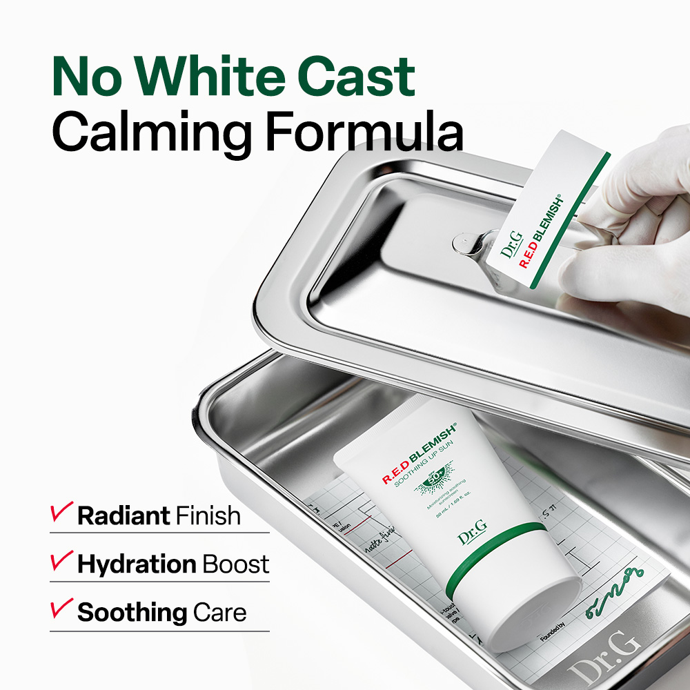
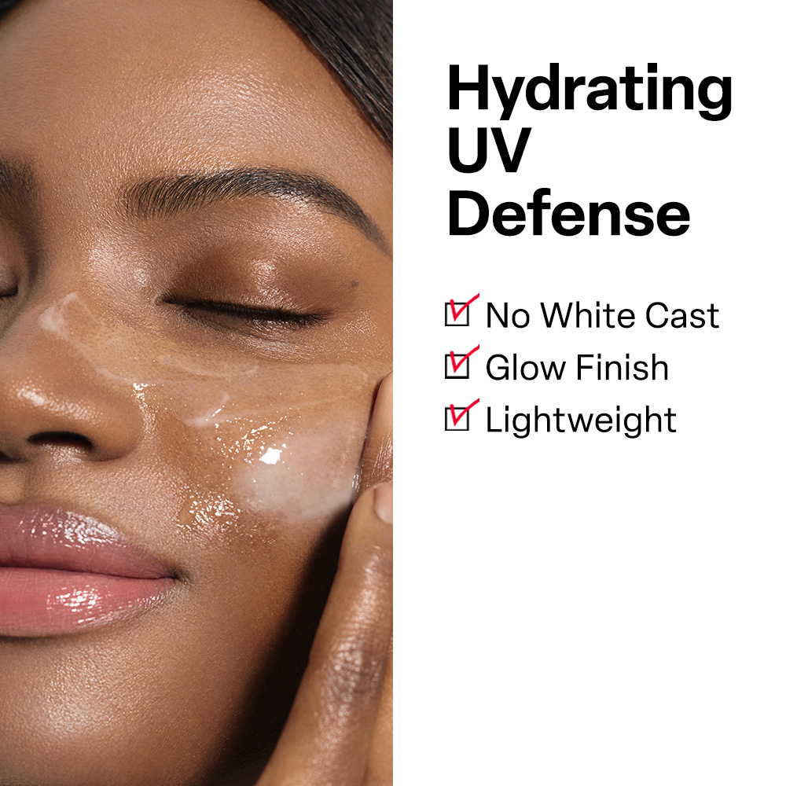
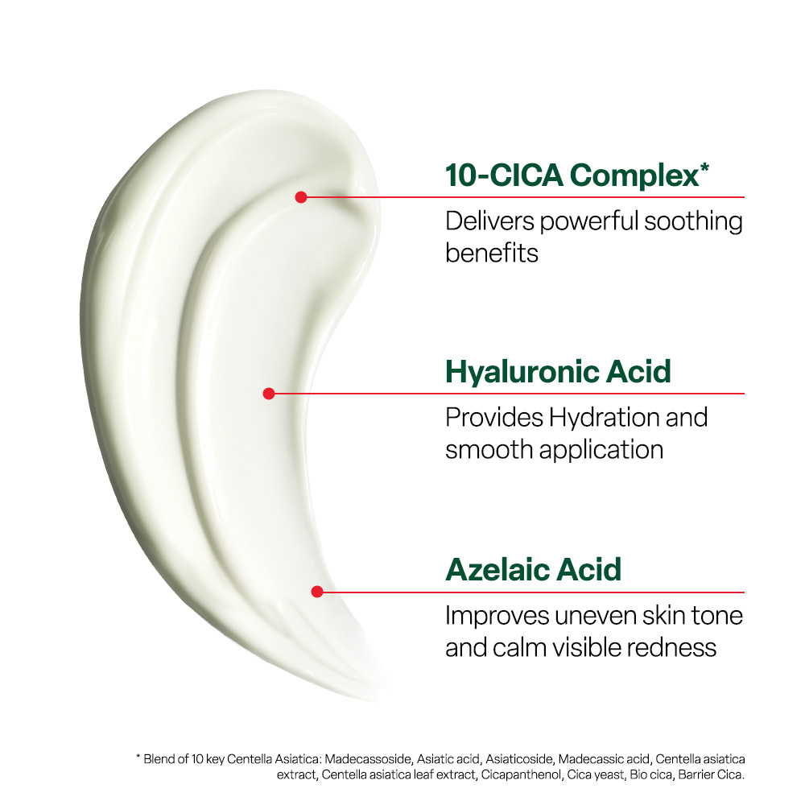
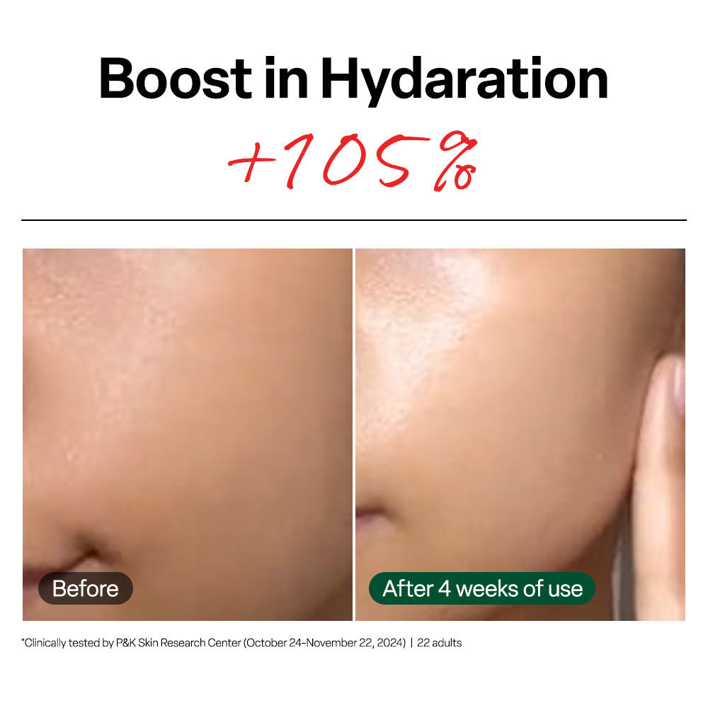
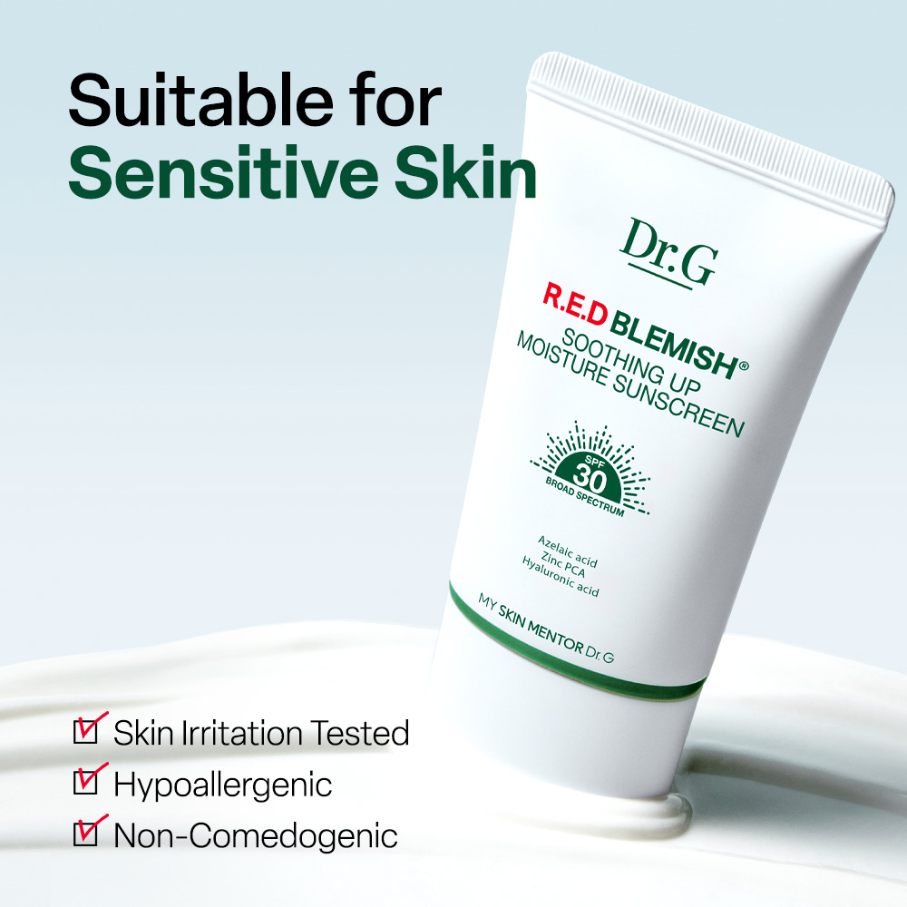
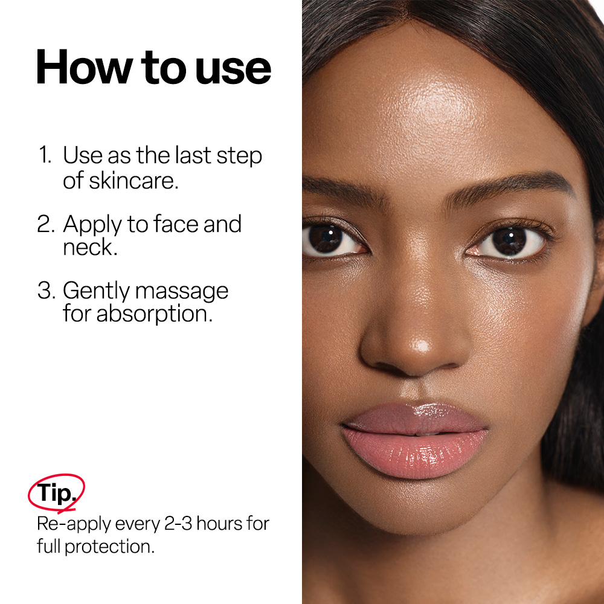
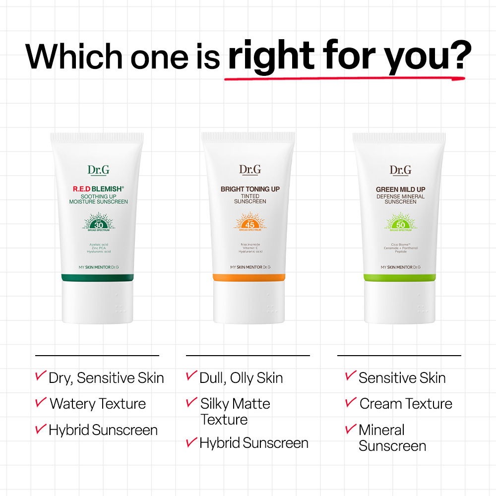

레드 블레미쉬 수딩업 선 50ml
닥터지 레드 블레미쉬 수딩 업 선.
10-시카 콤플렉스와 쿨링 허브 콤플렉스를 담은 가볍고 촉촉한 크림 타입 자외선 차단제입니다. -4.2°C 쿨링 효과로 민감한 피부를 진정시키고 7중 차단으로 보호합니다.
10-시카 콤플렉스와 쿨링 허브 콤플렉스를 담은 가볍고 촉촉한 크림 타입 자외선 차단제입니다. -4.2°C 쿨링 효과로 민감한 피부를 진정시키고 7중 차단으로 보호합니다.
구분 :썬케어
- 다음의 장점을 특징으로 합니다. 올리브영 어워드 1위* 수분크림끈적임 없이 진정 수분을 공급하는 선크림 10-시카 콤플렉스 그리고 쿨링 허브 콤플렉스.
- 깊은 수분 공급을 위해 설계되었습니다. 판테놀, 즉시 전달됩니다. -4.2°C 달아오르고 붉어진 피부를 위한 쿨링 기능과 함께, 자외선, 적외선, 블루라이트, 미세먼지, 꽃가루 등으로부터 피부를 보호하는 7중 멀티 프루프 기능을 갖췄습니다.
- 이 공식을 특별하게 만드는 것은 무엇입니까? 끈적임이나 뭉침 없이 피부에 편안하게 녹아드는 부드러운 수분 크림 텍스처의 자외선 차단제입니다. 민감한 피부에도 깊은 보습감을 주고 탄력 있는 보호막을 형성해 줍니다.
- 진정시키는 태양 보호: 피부과 전문의가 개발한 한국산 자외선 차단제 SPF 30 UVA, UVB로부터 피부를 보호하고 민감하고 잡티가 많은 피부를 매일 진정 케어해 줍니다.
- 수분 공급 수분 포뮬러: 풍부하게 히알루론산 수분을 보충하고 피부에 가볍게 발려 매끄럽고 편안한 사용감을 선사합니다. 매일 사용하기 위해
- 카밍 시카 콤플렉스: 로 공식화 10-CICA 콤플렉스, 다음의 혼합 센텔라 아시아티카- 마데카소사이드, 아시아티코사이드 등 유래 성분이 민감해진 피부를 진정시키는 데 도움을 줍니다.
- 빛나는 흰색 마감 처리 없음: 아젤라산과 아연 PCA가 피부톤을 고르게 유지하도록 돕고 자연스러운 광채를 더해주며, 끈적임 없이 마무리됩니다.
- 닥터지 – KOREA'S NO. 1 스킨케어 브랜드:* 25년 전 저명한 피부과 전문의 안건영 원장이 설립한 닥터지는 엄격한 피부과학을 바탕으로 탄생했습니다. 모든 성분은 과학적으로 검증되어 피부 자극을 최소화하고 눈에 띄는 변화를 선사합니다. *대한민국 더모코스메틱 1위.
- 수분 함량 개선: 피부 수분 함량을 향상시킵니다. 17.1% 한 번 사용한 후*.
- 열로 인한 피부 진정: 열로 인한 피부 홍조를 개선합니다. 12.9% 사용 후*.
- "10-시카 콤플렉스
- 기능: 시카 성분이 민감하고 자극받은 피부를 효과적으로 진정시켜 줍니다.
- 중요한 이유: 스트레스받은 피부에 수분을 깊이 채우고 편안하게 진정시켜 건강하고 균형 잡힌 피부로 가꾸는 데 도움을 줍니다.
- 기능: 달아오른 피부에 상쾌한 쿨링감과 수분을 더해 즉각적으로 피부 온도를 낮춰줍니다.
- 중요한 이유: 외부 열과 햇빛 노출로 자극받은 피부를 즉각적으로 진정시키고 불편함을 완화해 줍니다."
- 정제수, 다이부틸아디페이트, 프로판다이올, 에틸헥실트리아존, 테레프탈릴리덴디캠퍼설포닉애씨드, 나이아신아마이드, 옥틸도데칸올, 트로메타민, 폴리글리세릴-3다이스테아레이트, 세테아릴알코올, 판테놀, 1,2-헥산다이올, 펜틸렌글라이콜, 카프릴릴메티콘, 다이에틸아미노하이드록시벤조일헥실벤조에이트, 폴리실리콘-15, 폴리메틸실세스퀴옥세인, 포타슘세틸포스페이트, 글리세릴스테아레이트, 비스-에틸헥실옥시페놀메톡시페닐트리아진, 메틸프로판다이올, 카보머, 에키움 플란타기네움씨오일, 글리세릴스테아레이트시트레이트, 아크릴레이트/C10-30알킬아크릴레이트크로스폴리머, 에틸헥실글리세린, 해바라기씨오일불검화물, 암모늄아크릴로일다이메틸타우레이트/브이피코폴리머, 아데노신, 부틸렌글라이콜, 폴리에터-1, 풍선덩굴꽃/잎/덩굴추출물, 약모밀추출물, 노니열매추출물, 시트릭애씨드, 토코페롤, 쑥잎추출물, 센텔라 아시아티카 꽃/잎/줄기추출물, 아티초크잎추출물, 바이오사카라이드검-1, 사카라이드발효물, 복숭아꽃추출물, 센텔라 아시아티카 발췌, 센텔라 아시아티카 잎 추출물, 센텔라 아시아티카 뿌리추출물, 물냉이추출물, 7-데하이드로콜레스테롤, 엑토인, 아시아티코사이드, 타라열매추출물, 마데카소사이드, 코토니추출물, 락토바실러스발효물, 밀몽화꽃추출물, 프랑스해안송껍질추출물, 아시아틱애씨드, 마데카식애씨드 (F.I.L. T70101663/1)
- STEP 1. 스킨케어 마지막 단계(외출 15~30분 전)에 적당량을 덜어줍니다.
2단계: 피부결을 따라 얼굴 안쪽에서 바깥쪽으로 부드럽게 펴 발라줍니다.
3단계: 손바닥으로 가볍게 두드려 피부에 부드럽게 밀착되고 흡수되도록 해 주세요.
전문가 팁: 히알루론산, 판테놀, 세라마이드 제품과 함께 사용하면 수분 공급 시너지 효과를 높일 수 있습니다. 앞 단계의 스킨케어 제품을 가볍게 흡수시킨 뒤 발라주면 매끄럽고 무게감 없이 밀착됩니다.


자주 묻는 질문
한국 소비자들이 닥터지를 사랑하는 이유
병원에서 시작된 혁신
K-뷰티 감성


민감성 피부 테스트 완료